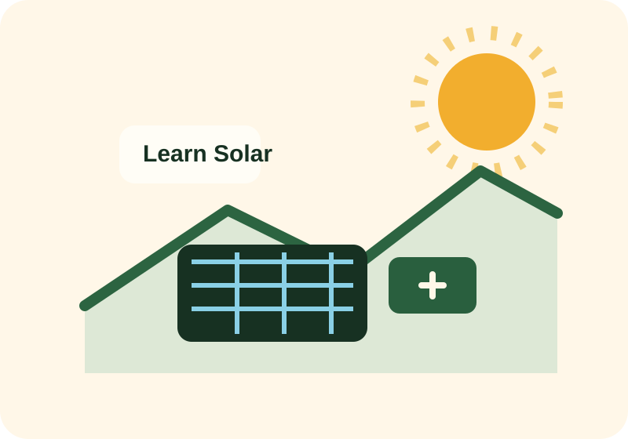
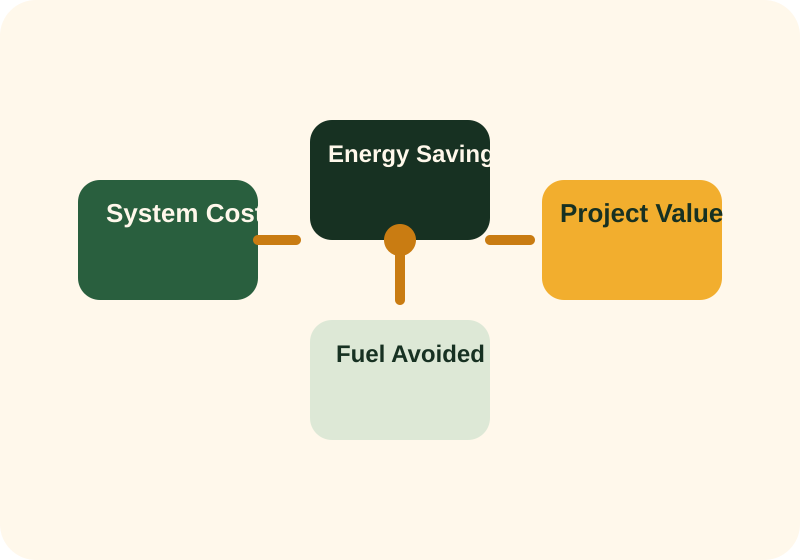
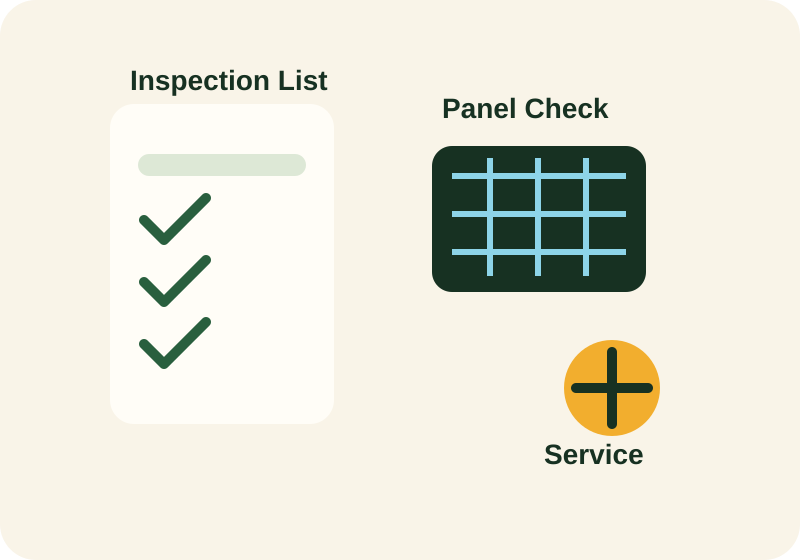

Upfront equipment cost
Panels, inverters, batteries, controllers, mounting structures, cables, and protection devices make up the core hardware cost.
Economics track
People invest in solar for different reasons: unreliable grid supply, high fuel bills, environmental goals, or the need for energy independence. This section explains how to think through cost and value without oversimplifying the decision.

Page progress
Use the worksheet to practice explaining value, payback limits, and lifecycle cost in your own words.
Visual study aid


Cost structure
Panels, inverters, batteries, controllers, mounting structures, cables, and protection devices make up the core hardware cost.
Labor, transport, design, testing, and commissioning are part of the project cost and should not be ignored.
Battery replacement, inverter replacement, cleaning, inspections, and repairs affect total ownership cost over time.
Savings logic
A simple payback calculation compares total investment to annual savings. This can help screen a project quickly, but it does not capture everything. Solar systems produce value through reduced grid purchases, reduced generator runtime, quieter operation, lower fuel logistics, improved reliability, and productivity gains.
For a clinic or school, the value of continuity may exceed the direct value of energy saved. For a business, avoiding downtime may be more important than achieving the shortest payback.
Policy and market context
Policy affects interconnection rules, import duties, standards, equipment quality, and incentives. In some markets, solar adoption is helped by net metering, tax relief, or mini-grid programs. In other markets, adoption grows mainly because users are escaping unreliable service and rising generator costs.
In the Nigerian context, the economics of solar can be strongly influenced by outage frequency, self-generation fuel costs, battery import pricing, and the availability of qualified installers. This means two projects with similar hardware can have very different value depending on location and usage pattern.
Financial discipline
Check what is covered, for how long, and who is responsible locally if the equipment fails.
Ask whether shading, temperature, cable losses, and battery losses were included in the estimate.
Battery-heavy systems should budget for replacement cycles instead of pretending those costs do not exist.
Good hardware can still fail if the installer does poor wiring, poor protection, or poor commissioning.
Quiz